Debugging the XNU Kernel with IDA Pro
Copyright 2019 Hex-Rays SA
Purpose
IDA 7.3 introduces the Remote XNU Debugger. It is designed to communicate with the GDB stub included with popular virtualization tools, namely VMWare Fusion (for OSX) and Corellium (for iOS). The debugger allows you to observe the Darwin kernel as it is running, while at the same time utilising the full power of IDA's analysis capabilities. It works equally well on Mac, Windows, and Linux.
This writeup is intended to quickly get you familiar with debugger, as well as offer some hints to make the experience as smooth as possible.
Debugging OSX with VMWare
To get started with debugging OSX, we will perform a simple experiment. This is the same experiment outlined in this great writeup by GeoSn0w, but we will be performing the equivalent in IDA - which we hope you'll find is much simpler.
Begin with the following setup:
- create an OSX virtual machine with VMWare Fusion. in this example the virtual machine is OSX 10.13.6, but the experiment should work with any recent OSX version.
-
open Terminal in the VM and enable some basic XNU debugging options:
bash $ sudo nvram boot-args="slide=0 debug=0x100 keepsyms=1"3. shut down the VM and add the following line to the .vmx file:c debugStub.listen.guest64 = "TRUE"4. power on the virtual machine, open Terminal, and run this command:$ uname -v Darwin Kernel Version 17.7.0 ... root:xnu-4570.71.17~1/RELEASE_X86_64Let's use IDA to modify this version string.
Launch IDA, and when prompted with the window IDA: Quick start, choose Go to start with an empty database. Then go to menu Debugger>Attach>Remote XNU Debugger and set the following options:
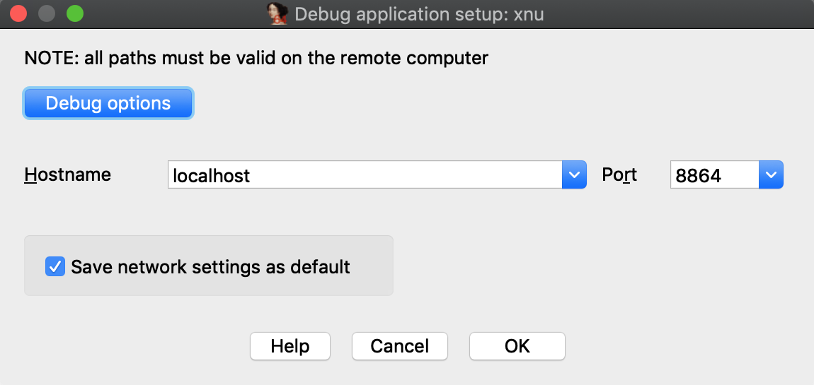
Click OK, then select \
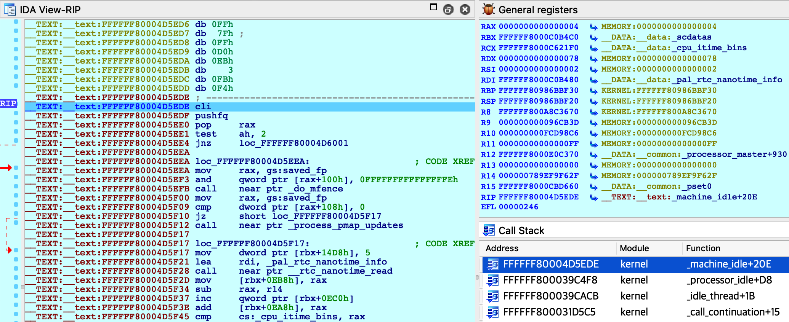
IDA should have printed the message FFFFFF8000200000: process kernel has started, meaning it successfully detected the kernel image in memory. Now let's find the version string. Conveniently, the string appears in the kernel's symbol table, so we can simply use shortcut G and enter the name _version to jump right to it:
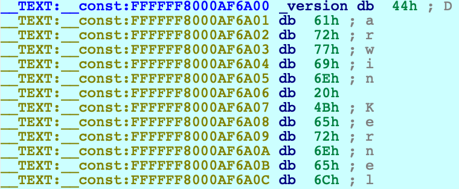
Use IDAPython to overwrite the bytes at this address:
idaapi.dbg_write_memory(0xFFFFFF8000AF6A00, "IDAPRO")
Resume the process and allow the VM to run freely. Go back to Terminal in the VM and run the same command as before:
$ uname -v
IDAPRO Kernel Version 17.7.0 ... root:xnu-4570.71.17~1/RELEASE_X86_64
The output should look almost the same, except Darwin has been replaced with IDAPRO. So, we have modified kernel memory without breaking anything! You can continue to explore memory, set breakpoints, pause and resume the OS as you desire.
Using the KDK
If you have installed a Kernel Development Kit from Apple, you can set KDK_PATH in dbg_xnu.cfg to enable DWARF debugging:
KDK_PATH = "/Library/Developer/KDKs/KDK_10.13.6_17G4015.kdk";
Even if there is no KDK available for your OSX version, you can still utilise the KDK_PATH option in IDA to speed up debugging. For example, in the experiment above we could have done the following:
-
make your own KDK directory:
bash $ mkdir ~/MyKDK2. copy the kernelcache from your VM:bash $ scp user@vm:/System/Library/PrelinkedKernels/prelinkedkernel ~/MyKDK3. decompress the kernelcache:bash $ kextcache -c ~/MyKDK/prelinkedkernel -uncompressed4. set KDK_PATH in dbg_xnu.cfg:c KDK_PATH = "~/MyKDK";
Now whenever IDA needs to extract information from the kernel or kexts, it will parse the kernelcache file on disk instead of parsing the images in memory. This should be noticeably faster.
Debugging a Development Kernel
Our next goal is to use the KDK to create a rich database that can be used to debug XNU in greater detail. In this example we will debug the development kernel included in the Apple KDK. Let's open this file in IDA:
$ export KDK=/Library/Developer/KDKs/KDK_10.13.6_17G4015.kdk
$ export KERNELS=$KDK/System/Library/Kernels
$ ida64 -okernel.i64 $KERNELS/kernel.development
Wait for IDA to load the DWARF info and complete the autoanalysis. This may take a few minutes, but we only need to do it once.
While we wait, we can prepare the virtual machine to use the development kernel instead of the release kernel that is shipped with OSX (Note: System Integrity Protection must now be disabled in the VM). Open Terminal in the VM and run the following commands:
-
copy the development kernel from the KDK:
bash $ sudo scp user@host:"\$KERNELS/kernel.development" /System/Library/Kernels/2. reconstruct the kernelcache:bash $ sudo kextcache -i /3. reboot:bash $ sudo shutdown -r now4. after rebooting, check that the development kernel was properly installed:$ uname -v ... root:xnu-4570.71.17~1/DEVELOPMENT_X86_64
The VM is now ready for debugging.
\ \
IDA Configuration
Return to IDA and use Debugger>Select debugger to select Remote XNU Debugger. Then open Debugger>Process options and set the following fields:
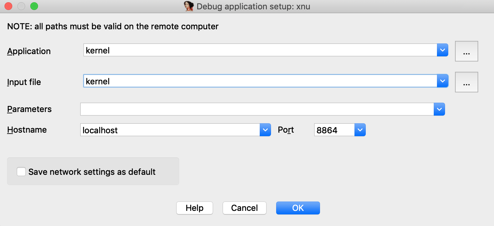
Now go to Debugger>Debugger options>Set specific options and make sure the KDK path field is set:
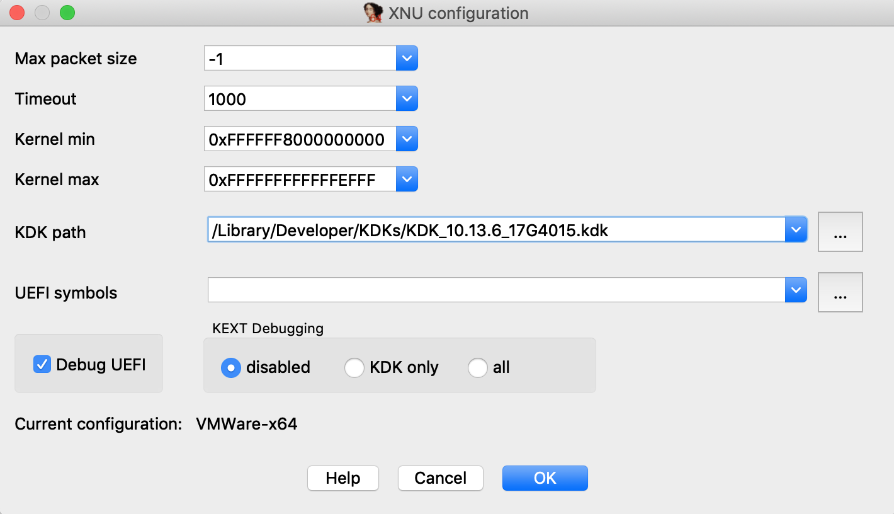
You can ignore the other options for now, and press OK.
\
Assembly-Level Debugging + DWARF
IDA supports source-level debugging for the XNU Kernel. However for demonstration purposes we will focus on assembly-level debugging, while taking advantage of source-level DWARF information like local variables. This is a bit more stable, and is still quite useful.
Before attaching the debugger, open Options>Source paths... and un-check the checkbox:

Then click Apply. This will prevent IDA from complaining when it can't find a source file.
Finally, select Debugger>Attach to process>attach to the process started on target. After attaching, jump to function dofileread, and use F2 to set a breakpoint. Resume the debugger and and wait for the breakpoint to be hit (typically it will be hit right away, if not try simply running a terminal command in the guest). Once XNU hits our breakpoint, open Debugger>Debugger windows>Locals:
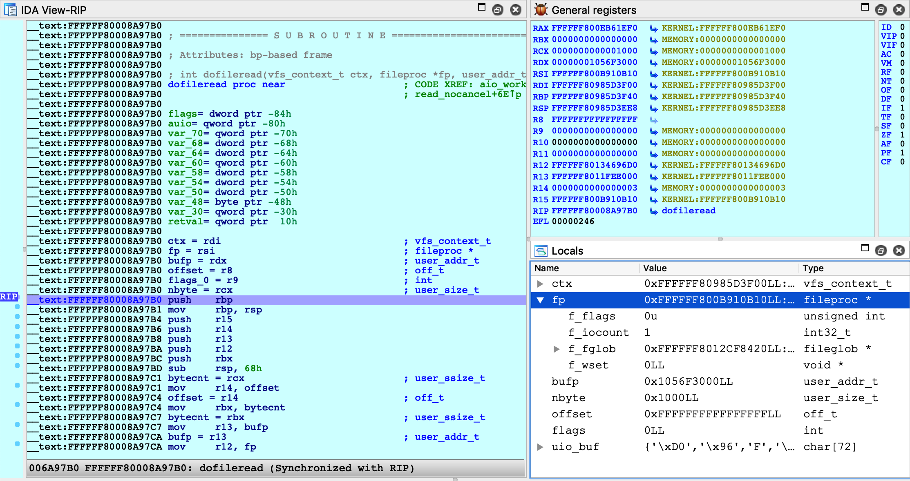
We can now perform detailed instruction-level debugging with the assistance of DWARF. You can continue to single step, set breakpoints, and inspect or modify local variables just like any other IDA debugger.
\ \
KEXT Debugging
IDA also supports debugging kext binaries. To demonstrate this, we will debug IONetworkingFamily, a submodule of IOKit that is typically shipped with the KDK. Begin by opening the binary in IDA:
$ export KEXTS=$KDK/System/Library/Extensions
$ ida64 -onet.i64 $KEXTS/IONetworkingFamily.kext/Contents/MacOS/IONetworkingFamily
Select Remote XNU Debugger from the debugger menu. Then in Debugger>Process options, set:
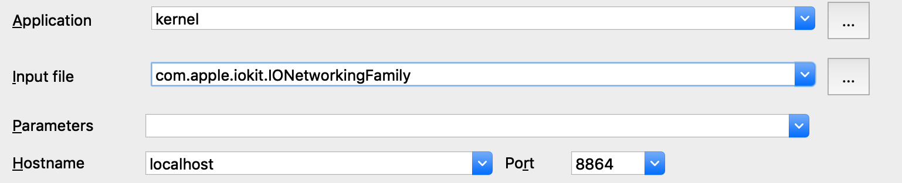
Note that we provide the bundle ID of the kext (com.apple.iokit.IONetworkingFamily) as the Input file field. This allows the debugger to easily identify the target kext at runtime.
Also note that loading all kexts in kernel memory can be a slow operation, which is why it is disabled by default. Open Debugger>Debugger options>Set specific options and ensure the KDK path field is set, then set the KEXT Debugging option to KDK only:
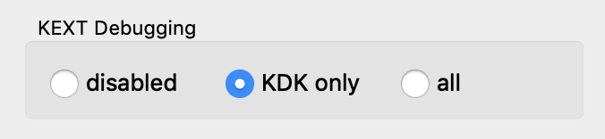
This tells the debugger to only load kexts that are present in the KDK. Since the KDK binaries are on the local filesystem, IDA can parse the kexts in a negligible amount of time - which is ideal since we're really only interested in IONetworkingFamily.
Now power on your VM and allow it to boot up. Once it is running idle, attach the debugger. Immediately IDA should detect the kernel and all relevant kexts in memory, including IONetworkingFamily:
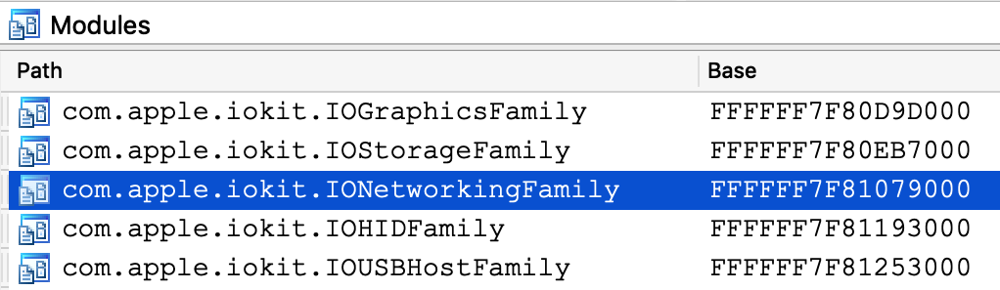
Double-click to bring up the debug names for this module, and search for IONetworkInterface::if_ioctl:
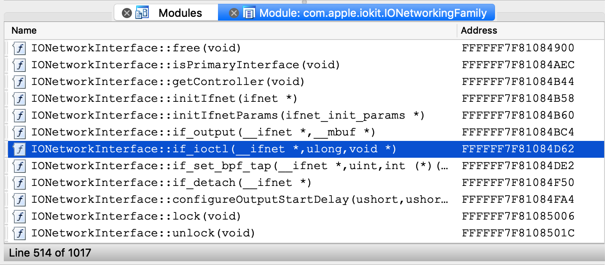
Now set a breakpoint at this function and resume the OS. Typically the breakpoint will be hit right away, but if it isn't try performing an action that requires a network interface (for instance, performing a google search). Once execution breaks in the kext we can use the database to debug it in detail:
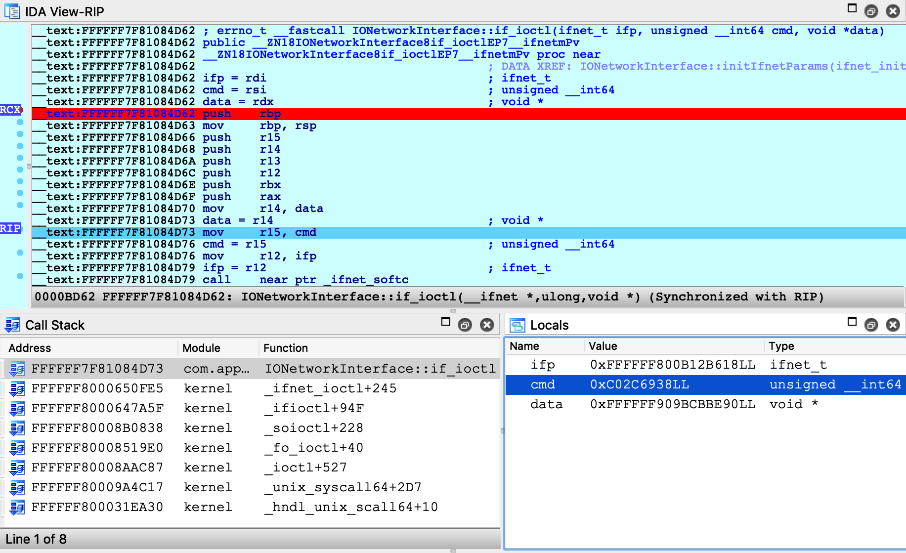\ \ \ \
Debugging a Prelinked Kernelcache
For simplicity, all of the examples up until now have dealt with a subset of the kernel, but it is also possible to load a complete prelinked kernelcache in IDA and debug it. Naturally, we have some suggestions for this.
Extending the KDK
If you're interested in debugging the entire prelinked kernel, the biggest concern is speed. IDA must create a detailed and accurate depiction of kernel memory, which could contain hundreds of kext modules. If we're not careful, this can be slow.
Fortunately there is an easy solution. Try the following:
-
create a writable copy of Apple's KDK:
bash $ cp -r /Library/Developer/KDKs/KDK_10.13.6_17G4015.kdk ~/MyKDK2. copy the kernelcache from your VM to the new KDK:bash $ scp user@vm:/System/Library/PrelinkedKernels/prelinkedkernel ~/MyKDK3. decompress the kernelcache:bash $ kextcache -c ~/MyKDK/prelinkedkernel -uncompressed
Now IDA can use both the KDK and the kernelcache to extract debugging information for almost any kext at runtime. This should be fast.
Loading the Kernelcache
When loading a kernelcache, IDA now offers more load options:
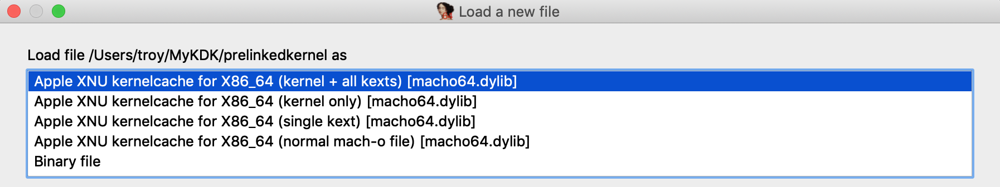
In this example we want to load everything, so choose the kernel + all kexts option and wait for IDA to load all the subfiles and finish the autoanalysis. This will take a while but there's no way around it, it's a lot of code.
IMPORTANT NOTE: Try to avoid saving the IDA database file in the KDK directory. It is important to keep irrelevant files out of the KDK since they might slow down IDA's KDK parsing algorithm.
Now we might want to improve the static analysis by loading DWARF info from the KDK. In IDA 7.3 the dwarf plugin supports batch-loading all DWARF info from a KDK into a kernelcache database. Currently this feature must be invoked manually, so we have provided this script to make it easier.
Copy kdk_utils.py to the plugins directory of your IDA installation. This plugin will create a new menu Edit>Other>KDK utils, with two new menu actions:
- Load KDK: This action will automatically detect all matching DWARF files in a given KDK, then apply the DWARF info to the subfiles in the database (including the kernel itself).
- Load DWARF for a prelinked KEXT: This action is useful if you have DWARF info for a prelinked kext that is not included in Apple's KDK. For a given DWARF file, the action will find a matching kext in the database and apply the DWARF info to this subfile.
Try opening Edit>Other>KDK utils>Load KDK and provide the KDK path:
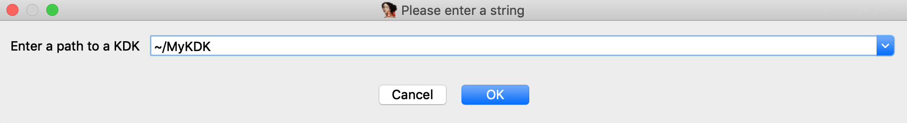
Wait for IDA to scan the KDK for matching DWARF files and load them. This operation can also take a while, but it's worth it for all the extra structures, prototypes, and names that are added to the database. In the end we have a very detailed database that we are ready to use for debugging.
Now open Debugger>Process options and set the following options:
Then open Debugger>Debugger options>Set specific options and set the following fields:
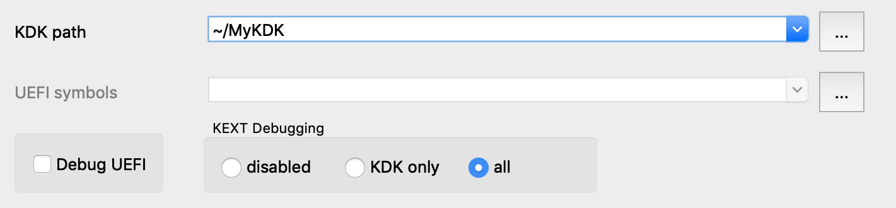
Note that we set the KEXT Debugging option to all. This tells the debugger to detect every kext that has been loaded into memory and add it to the Modules list, including any non-prelinked kexts (there are likely only a handful of them, so it doesn't hurt).
Finally, power on the VM and attach to it with Debugger>Attach to process>attach to the process started on target. IDA should be able to quickly generate modules for the kernel and all loaded kexts:
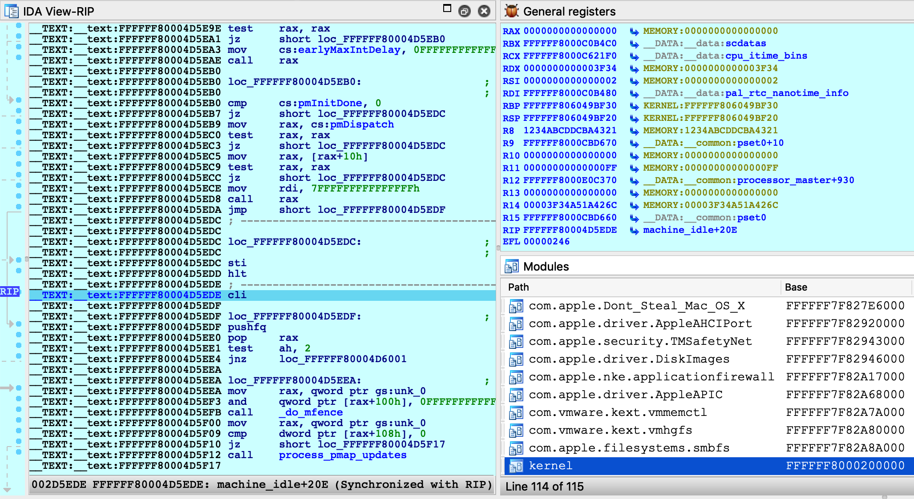
You are now free to explore the entire running kernel! Try performing any of the previous demos in this writeup. They should work about the same, but now they are all possible with one single database.
Kernel ASLR + Rebasing
It is worth noting that rebasing has been heavily improved in IDA 7.3. Even large databases like the one we just created can now be rebased in just a few seconds. Previous IDA versions would take quite a bit longer. Thus, IDA should be able to quickly handle kernel ASLR, even when working with prelinked kernelcaches.
Debugging the OSX Kernel Entry Point
In this example we demonstrate how to gain control of the OS as early as possible. This task requires very specific steps, and we document them here. Before we begin, we must make an important note about a limitation in VMWare's GDB stub.
Physical Memory
Currently VMWare's 64-bit GDB stub does not allow us to debug the kernel entry point in physical memory. According to VMWare's support team, the correct approach is to use the 32-bit stub to debug the first few instructions of the kernel, then switch to a separate debugger connected to the 64-bit stub once the kernel switches to 64-bit addressing.
Since IDA's XNU debugger does not support 32-bit debugging, this approach is not really feasible (and it's not very practical anyway).
Workaround
Rather than add support for the 32-bit stub just to handle a few instructions, the official approach in IDA is to break at the first function executed in virtual memory (i386_init). This allows us to gain control of the OS while it is still in the early stages of initialization, which should be enough for most use cases.
Here's how you can do it:
-
Disable ALSR for the kernel. Open Terminal in the VM and run the following command:
bash sudo nvram boot-args="slide=0"Then power off the VM. 2. Add this line to the .vmx file:
c debugStub.hideBreakpoints = "TRUE"This ensures that hardware breakpoints are enabled in the GDB stub. For most versions of VMWare, TRUE is the default value, but it's better to be safe. 3. Also add this line to the .vmx file:
c monitor.debugOnStartGuest64 = "TRUE"This will tell VMWare to suspend the OS before it boots. 4. Power on the VM. It will remain suspended until we attach the debugger. 5. Load a kernel binary in IDA, and set the following XNU debugger options:
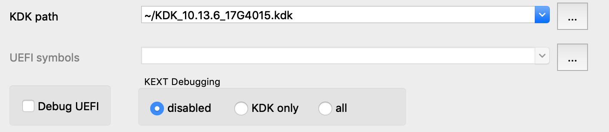
Note that we un-checked the Debug UEFI option. This option is explained in detail in the UEFI Debugging section, but for now just ensure it is disabled. This will prevent IDA from doing any unnecessary work. 6. Attach the debugger. The VM will be suspended in the firmware before the boot sequence has begun:
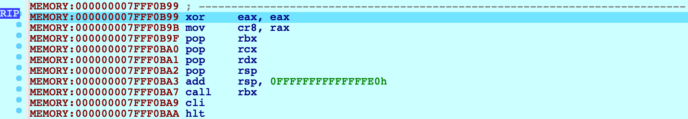 7. Now jump to the function _i386_init and set a hardware breakpoint at this location:
python idaapi.add_bpt(here(), 1, BPT_EXEC)We must use a hardware breakpoint because the kernel has not been loaded and the address is not yet valid. This is why steps 1 and 2 were important. It ensures the stub can set a breakpoint at a deterministic address, without trying to write to memory. 8. Resume the OS, and wait for our breakpoint to be hit:
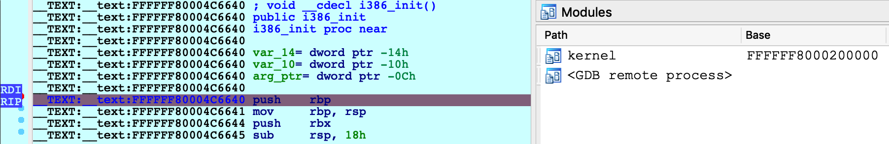
IDA should detect that execution has reached the kernel and load the kernel module on-the-fly. You can now continue to debug the kernel normally.
UEFI Debugging
It is possible to debug the EFI firmware of a VMWare Fusion guest. This gives us the unique opportunity to debug the OSX bootloader. Here's how it can be easily done in IDA:
First copy the bootloader executable from your VM:
$ scp user@vm:/System/Library/CoreServices/boot.efi .
Now shut down the VM and add this line to the .vmx file:
monitor.debugOnStartGuest64 = "TRUE"
Load the boot.efi binary in IDA, open Debugger>Debugger options, check Suspend on library load/unload, and set Event condition to:
get_event_id() == LIB_LOADED && get_event_module_name() == "boot"
This will suspend the OS just before the bootloader entry point is invoked. Note: For some older versions of OSX, the bootloader will be named "boot.sys". You can check the name under the .debug section of the executable.
Now select Remote XNU Debugger from the Debugger menu, and set the following fields in Debugger>Process options:
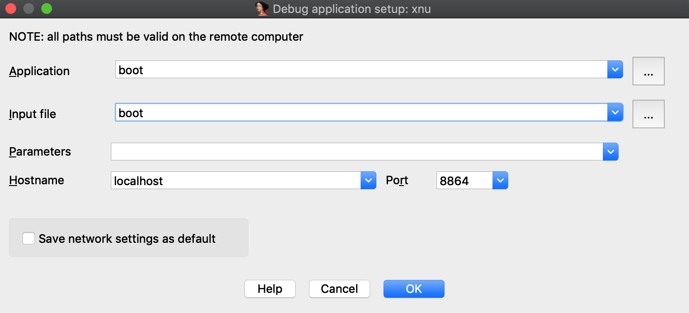\
We're now ready to start debugging the bootloader. Power on the VM (note that the VM is unresponsive since it is suspended), and attach to it with Debugger>Attach to process. After attaching IDA will try to detect the EFI_BOOT_SERVICES table. You should see the debugger print something like this to the console:
7FFD7430: EFI_BOOT_SERVICES
Now resume the process. You should see many UEFI drivers being loaded, until eventually boot.efi is loaded and IDA suspends the process:
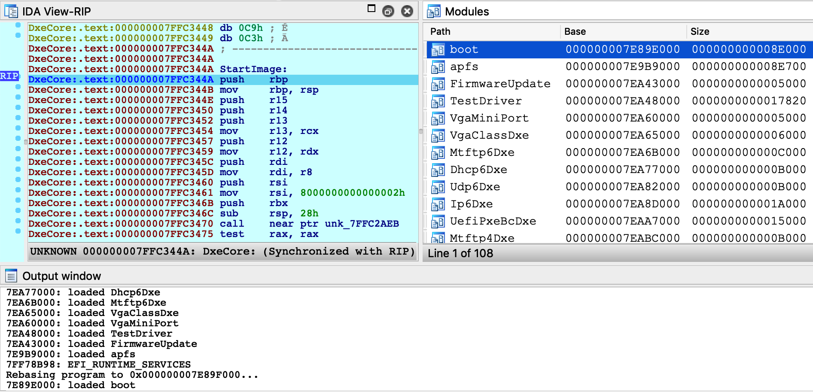
At this point, the bootloader entry point function is about to be invoked. Jump to _ModuleEntryPoint in boot.efi and press F4. We can now step through boot.efi:
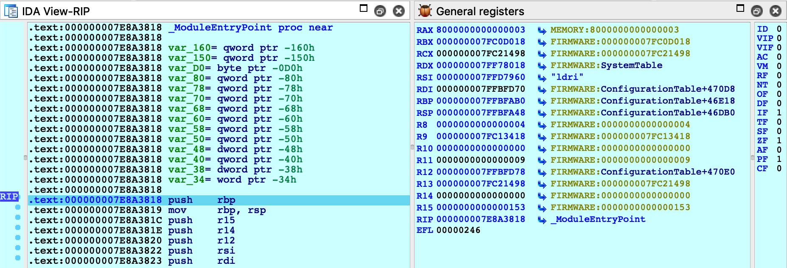\
GetMemoryMap
To facilitate UEFI debugging, IDA provides an IDC helper function: xnu_get_efi_memory_map. This function will invoke EFI_BOOT_SERVICES.GetMemoryMap in the guest OS and return an array of EFI_MEMORY_DESCRIPTOR objects:
IDC>extern map;
IDC>map = xnu_get_efi_memory_map();
IDC>map.size
35. 23h 43o
IDC>map[4]
object
Attribute: 0xFi64
NumberOfPages: 0x30B6i64
PhysicalStart: 0x200000i64
Type: "EfiLoaderData"
VirtualStart: 0x0i64
IDC>map[27]
object
Attribute: 0x800000000000000Fi64
NumberOfPages: 0x20i64
PhysicalStart: 0x7FF09000i64
Type: "EfiRuntimeServicesCode"
VirtualStart: 0x0i64
This function can be invoked at any point during firmware debugging.
UEFI Debugging + DWARF
If you build your own EFI apps or drivers on OSX, you can use IDA to debug the source code.
In this example we will debug a sample EFI application. On OSX the convention is to build EFI apps in the Mach-O format, then convert the file to PE .efi with the mtoc utility. In this example, assume we have an EFI build on our OSX virtual machine that contains the following files in the \~/TestApp directory:
- TestApp.efi - the EFI application that will be run
- TestApp.dll - the original Mach-O binary
- TestApp.dll.dSYM - DWARF info for the app
- TestApp.c - source code for the app
Here's how we can debug this application in IDA:
-
On your host machine, create a directory that will mirror the directory on the VM:
bash mkdir ~/TestApp2. Copy the efi, macho, dSYM, and c files from your VM:scp -r vmuser@vm:TestApp/TestApp.* ~/TestApp3. Open the TestApp.efi binary in IDA, and wait for IDA to analyze it.Note that you can improve the disassembly by loading the DWARF file from TestApp.dll.dSYM. You can do this with Edit>Plugins>Load DWARF file, or you can load it programatically from IDAPython:
python path = "~/TestApp/TestApp.dll.dSYM/Contents/Resources/DWARF/TestApp.dll" node = idaapi.netnode() node.create("$ dwarf_params") node.supset(1, os.path.expanduser(path)) idaapi.load_and_run_plugin("dwarf", 3)4. Select Remote XNU Debugger from the debugger menu, and set the following fields in Debugger>Process options: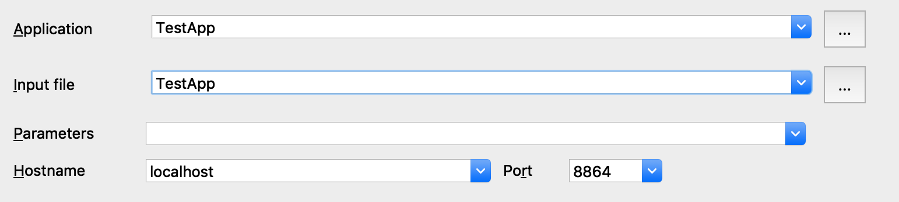 5. In Debugger>Debugger options, enable Suspend on library load/unload and set the Event condition field to:
c get_event_id() == LIB_LOADED && get_event_module_name() == "TestApp"6. In Debugger>Debugger options>Set specific options, set the following fields: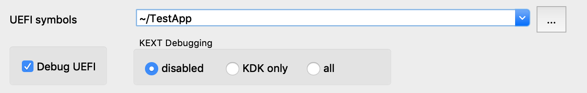
Note that we must enable the Debug UEFI option, and set the UEFI symbols option so the debugger can find DWARF info for the EFI app at runtime. 7. If the usernames on the host and VM are different, we will need a source path mapping:
python idaapi.add_path_mapping("/Users/vmuser/TestApp", "/Users/hostuser/TestApp")8. Reboot the VM and enter the EFI Shell 9. Attach the debugger. After attaching IDA will detect the firmware images that have already been loaded: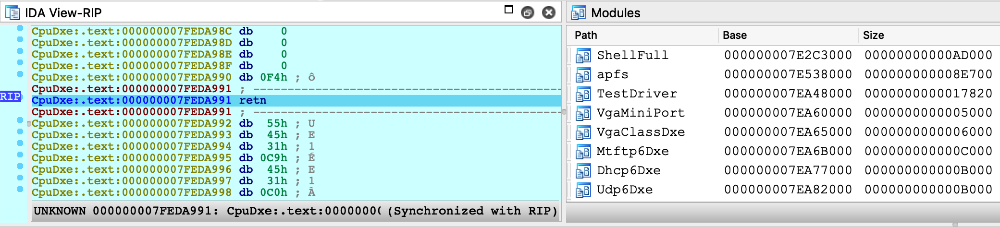 10. Resume the OS and launch TestApp from the EFI Shell prompt:
Shell>fs1:\Users\vmuser\TestApp\TestApp.efiAt this point IDA will detect that the target app has been loaded, and suspend the process just before the entry point of TestApp.efi (because of step 5). 11. Now we can set a breakpoint somewhere in TestApp.efi and resume the OS. The debugger will be able to load source file and local variable information from TestApp.dll.dSYM:
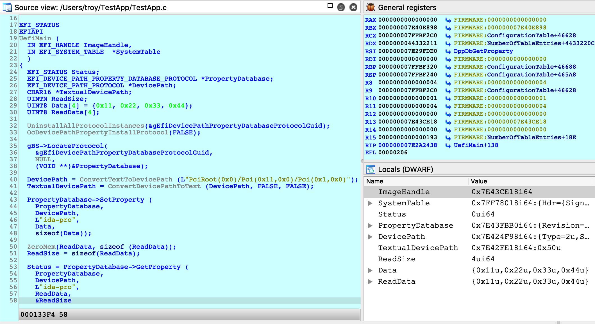
IMPORTANT NOTE: You must wait until TestApp has been loaded into memory before setting any breakpoints. If you add a breakpoint in the database before attaching the debugger, IDA might not set the breakpoint at the correct address. This is a limitation in IDA that we must work around for now.
Debugging iOS with Corellium
IDA can also debug the iOS kernel, provided you have access to a virtual iOS device from Corellium.
To get started with debugging iOS, we will perform a simple experiment to patch kernel memory. The device used in this example is a virtual iPhone XS with iOS 12.1.4, but it should work with any model or iOS version that Corellium supports. Begin by powering on your device and allow it to boot up. In the Corellium UI, look for the line labeled SSH under Advanced options:
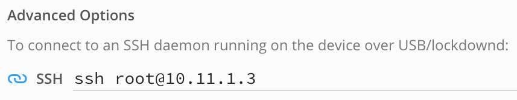
Ensure you can connect to the device by running this command over ssh:
$ ssh root@10.11.1.3 uname -v
Darwin Kernel Version 18.2.0 ... root:xnu-4903.242.2~1/RELEASE_ARM64_T8020
We will use IDA to patch this version string.
Now launch IDA, and when prompted with the window IDA: Quick start, choose Go to start with an empty database and open Debugger>Attach>Remote XNU Debugger. In the Corellium UI, find the hostname:port used by the kernel GDB stub. It should be specified in the line labeled kernel gdb:
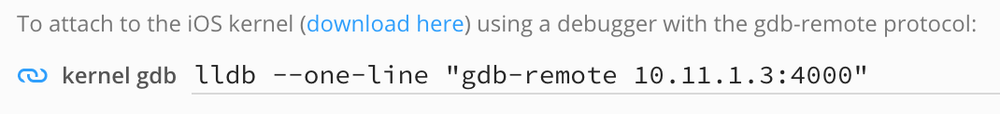
And set the Hostname and Port fields in IDA's application setup window:
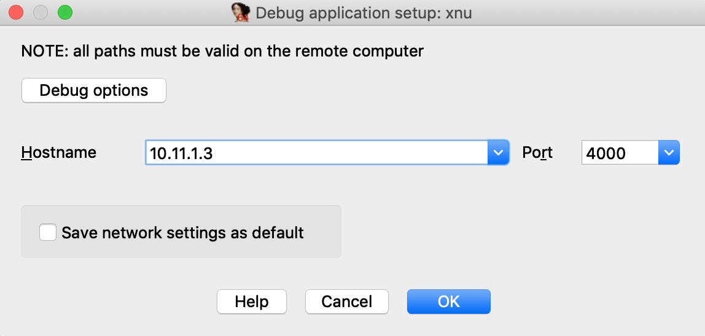
Now click on Debug options>Set specific options, and for the Configuration dropdown menu, be sure to select Corellium-ARM64:
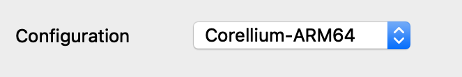
You can ignore the other config options for now, and click OK.
Click OK again, and wait for IDA to establish a connection to Corellium's GDB stub (this may take a few seconds). Then select \
If IDA could detect the kernel, it should appear in the Modules list:
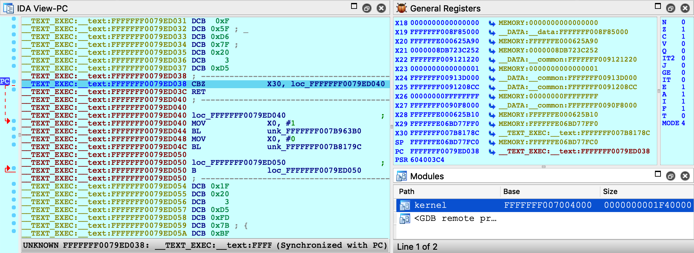
and the kernel version will be printed to the console:
FFFFFFF007029FD7: detected Darwin Kernel Version 18.2.0 ...
Navigate to this address and use IDAPython to overwrite the string:
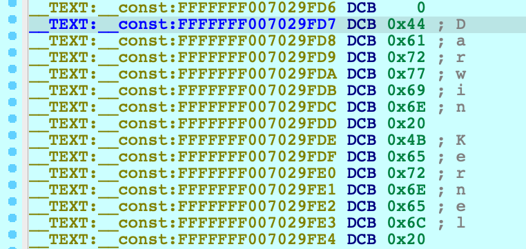
idaapi.dbg_write_memory(0xFFFFFFF007029FD7, "IDAPRO")
Resume the OS, and try running the same command as before:
$ ssh root@10.11.1.3 uname -v
IDAPRO Kernel Version 18.2.0 ... root:xnu-4903.242.2~1/RELEASE_ARM64_T8020
If we could successfully write to kernel memory, IDAPRO should appear in the output.
Creating a KDK for iOS
Typically a Kernel Development Kit is not available for iOS devices, but we can still utilise the KDK_PATH option in IDA to achieve faster debugging. In the example above, the initial attach can be slow because IDA must parse the kernel image in memory (which can be especially slow if the kernel has a symbol table).
Here's how you can speed things up:
-
create the KDK directory:
bash $ mkdir ~/iPhoneKDK2. copy the kernelcache from the virtual device:bash $ scp root@ip:/System/Library/Caches/com.apple.kernelcaches/kernelcache /tmp3. uncompress the kernelcache with lzssdec:bash $ lzssdec -o OFF < /tmp/kernelcache > ~/iPhoneKDK/kernelcache4. set KDK_PATH in dbg_xnu.cfg:c KDK_PATH = "~/iPhoneKDK";
Now whenever the debugger must extract information from the kernel, it will parse the local file on disk. This should be noticeably faster, especially if the device is hosted by Corellium's web service.
\ \ \
Debugging the iOS Kernel Entry Point
Corellium allows us to debug the first few instructions of kernel initialization. This can be very useful if we want to gain control of the OS as early as possible. In the Corellium UI, power on your device with the Start device paused option:
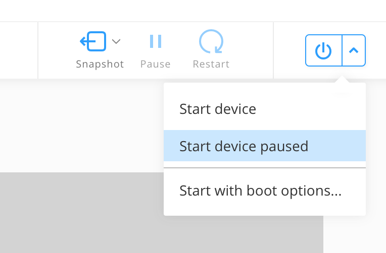
Now start IDA with an empty database and attach to the suspended VM:
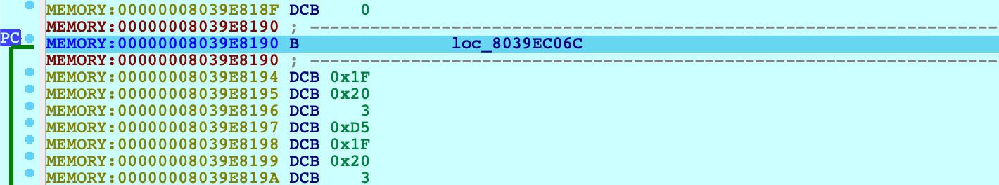
From the XNU source, this is likely the _start symbol in osfmk/arm64/start.s, which simply branches to start_first_cpu. After stepping over this branch:
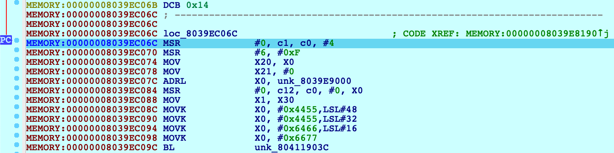
Press shortcut P to analyze start_first_cpu. This is where the kernel performs its initial setup (note that the value in X0 is a pointer to the boot_args structure). This function is interesting because it is responsible for switching the kernel to 64-bit virtual addressing. Typically the switch happens when this function sets X30 to a virtual address, then performs a RET:
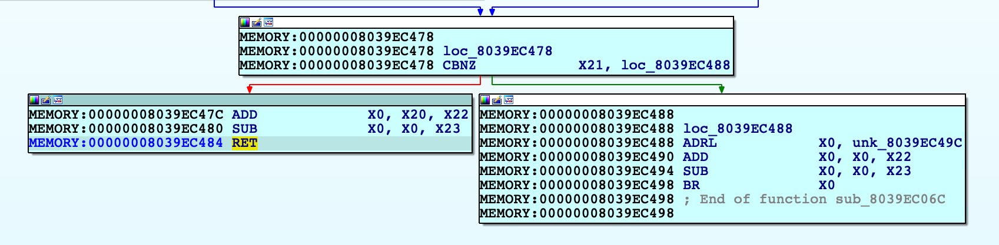
Use F4 to run to this RET instruction. In this example X30 will now point to virtual address 0xFFFFFFF007B84474. After single stepping once more, we end up in arm_init in virtual memory:
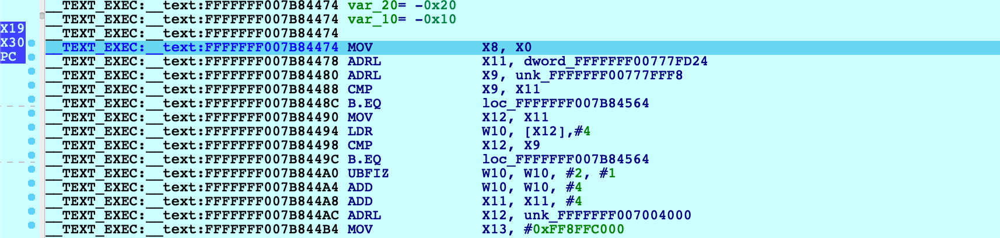
After this single step, IDA detected that execution reached the kernel's virtual address space and automatically initialized the debugging environment. In this case a message will be printed to the console:
FFFFFFF007004000: process kernel has started
This signifies that IDA successfully detected the kernel base and created a new module in the Modules list. If the kernel has a symbol table, debug names will be available. Also note that PC now points inside the segment __TEXT_EXEC:__text instead of MEMORY, because the debugger parsed the kernel's load commands to generate proper debug segments.
Now that we know the address of arm_init, we can streamline this task:
- power on the device with Start device paused
- attach to the paused VM
-
set a hardware breakpoint at arm_init:
python idaapi.add_bpt(0xFFFFFFF007B84474, 1, BPT_EXEC)4. resume, and wait for the breakpoint to be hit
This gives us a quick way to break at the first instruction executed in virtual memory. You can continue debugging iOS as normal.
Known Issues and Limitations
Here is a list of known shortcomings in the XNU Debugger. Eventually we will address all of them, but it is unlikely we will resolve all of them by the next release. If any of the following topics are important to you, please let us know by sending an email to support@hex-rays.com. Issues with vocal support from our users are automatically prioritised.
iBoot debugging
Debugging the iOS firmware/bootloader is not yet supported. An On-Premise Corellium box is required for this functionality, so we will only implement it if there is significant demand.
32-bit XNU
The XNU Debugger does not support debugging 32-bit XNU. Since pure 32-bit OSes are quite outdated it is unlikely we will support them unless there is exceptional demand.
KDP
The XNU Debugger relies on the Remote GDB Protocol, and currently Apple's Kernel Debugging Protocol (KDP) is not supported. It is possible to add KDP support to IDA in the future.